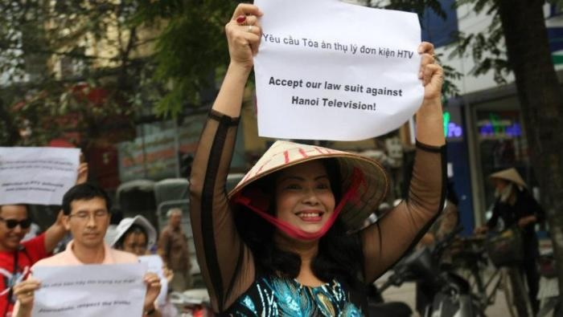

Bên cạnh những nhà đấu tranh cho dân chủ cùng thế hệ với tôi mà đa số đã ở tuổi “xưa nay hiếm”, gần đất xa trời, đã xuất hiện một lớp trẻ ngày càng đông đảo. Đó là những Vi Đức Hồi, Phạm Hồng Sơn, Cù Huy Hà Vũ, Nguyễn Bắc Truyền, Lê Thị Công Nhân, Nguyễn Văn Hải (Điếu Cày), Tạ Phong Tần, Nguyễn Tiến Trung, Trần Huỳnh Duy Thức, Nguyễn Văn Đài, Trương Minh Đức, Bùi Thanh Hiếu (Người Buôn Gió), Nguyễn Ngọc Như Quỳnh (Mê Gấu Nấm), Huỳnh Thục Vi, Nguyễn Hoàng Vi, Bùi Thị Minh Hằng, Nguyễn Xuân Diện, Vũ Mạnh Hùng, Vũ Hùng, Nguyễn Xuân Nghĩa, Ngô Quỳnh, Phạm Thanh Nghiên, Đặng Bích Phượng, Nguyễn Lân Thắng, Phạm Đoan Trang, Lê Quốc Quân, Đỗ Thị Minh Hạnh, Nguyễn Phương Uyên, Đinh Nguyên Kha. Vì đấu tranh cho dân chủ, nhiều người trong số họ đã bị Nhà nước độc tài đảng trị bỏ tù.

Bùi Thị Minh Hằng trong một cuộc biểu tình
Đôi ba người trong số họ tôi đã tiếp xúc. Có người tìm đến thăm tôi tại nhà riêng của tôi ở Sài Gòn như Người Buôn Gió, Phạm Hồng Sơn. Có người tôi tự tìm đến nhà họ như Lê Thị Công Nhân. Tôi biết những người bạn trẻ mới mẻ này hoàn toàn nhờ mạng internet. Như mối lương duyên của tôi với anh bạn trẻ Người Buôn Gió Bùi Văn Hiếu. Năm 2010 tôi làm bài thơ “Anh không về đại lễ đại lễ đâu em” đăng trên Bauxitevn. Người Buôn Gió có bài thơ họa lại rất hay. Ít ngày sau gió vô Sài Gòn tìm đến tôi.
Qua tiếp xúc của tôi, qua hoạt động xã hội sôi nổi, năng động, quả cảm của lớp người trẻ và qua bài viết của họ cho tôi mấy suy nghĩ về lớp người trẻ hôm nay.
Thứ nhất, họ thực sự là lớp người của kỷ nguyên văn minh tin học. Dòng máu Lạc Hồng trong tim họ cho họ lòng yêu nước và khí phách hiên ngang đi vào cuộc đấu tranh cho dân chủ hóa đất nước, đi vào cuộc đấu tranh cho toàn vẹn giang sơn gấm vóc và internet cho họ thứ vũ khí trong cuộc đấu tranh đó. Với internet, thứ dân chủ giả hiệu, thứ bánh vẻ của chủ nghĩa xã hội không còn đánh lừa được họ nữa, tội ác của đấu tranh giai cấp không còn che đậy được nữa. Họ không còn phải mất những năm tháng quý giá của cuộc đời mới tìm ra sự thật như thế hệ trước họ. Internet cho họ có đòi hỏi không thể thiếu về dân chủ, về Quyền con người. Càng khát khao về dân chủ, về Quyền con người, họ càng thấy rõ việc làm sai trái phản dân tộc, phản đất nước của những người Cộng sản cầm quyền và họ quyết liệt đấu tranh với sai trái đó.
Tôi đến nhà thăm Lê Thị Công Nhân ở Hà Nội sau ngày cô ra tù, khi cô cô mang thai đứa con đầu lòng. Nhân kể, những ngày Hà Nội có biểu tình chống Trung Quốc xâm lược biển đảo của ta, luôn có vài chục công an bủa vây quanh tòa nhà tập thể cô ở. Công an rải từ trên hành lang lầu ba nhà cô xuống dưới đường ngăn cô đi biểu tình. Có viên công an còn định xông vào nhà cô. Với cái bụng mang thai sắp đến ngày sinh, cô kiên quyết đứng chắn cửa không cho viên công an vào nhà. Cô nói: cháu sẵn sàng chết lúc đó nếu viên công an dùng sức mạnh cứ xong vào nhà cháu. Nói chuyện với tôi, Nhân lại khẳng định: dù chỉ có mình cháu, cháu cũng đấu tranh đến cùng với nhà nước cộng sản lừa dối này.
Chính Người Buôn Gió chở tôi đến nhà Lê Thị Công Nhân. Gió vứt chiếc xe máy ở đầu phố và kéo tôi đi thật nhanh lên cầu thang vào nhà Nhân. Gió nói: có thế mới vượt qua được đám người luôn rình rập quanh nhà Nhân, ngăn cản khách đến thăm Nhân. Tôi còn được biết chồng Nhân không thể gửi xe để lên nhà mình trên lầu ba vì công an đã làm việc với tất cả các chủ giữ xe trong phường, cấm họ nhận xe gửi của Ngô Nhân Quyền, chồng Nhân, khiến anh phải gửi xe tận phường khác rồi cuốc bộ hai, ba cây số về nhà mình!
Có lẽ không có ở đâu trên trái đất này có một chính quyền cư xử với dân ti tiện như vậy. Chỉ có chế độ độc tài đảng trị của mấy người bần cố nông vô học, không biết gì đến pháp luật, khi nắm được chính quyền vẫn ngồi xổm lên pháp luật mới hành xử như vậy. Những kẻ có quyền sử dụng quyền lực nhảm nhí đó làm cho người dân coi thường quyền lực, khinh miệt người có quyền và người dân càng thấy đó là những kẻ không xứng đáng với quyền lực, một chính quyền không xứng đáng, cần phải thay thế.
Không biết các nhà lãnh đạo cấp cao bên trên có biết cấp dưới đang bôi nhọ nhà nước cộng sản bằng những việc làm hèn hạ, ti tiện hay chính họ chỉ bảo bên dưới làm như vậy? Tôi lại nhớ đến một chuyện khác do chính ông Phạm Như Cương, ủy viên dự khuyết trung ương đảng, Chủ nhiệm Ủy ban khoa học xã hội Việt Nam kể với tôi. Ông Cương là người kế nhiệm ông Hoàng Minh Chính làm Viện trưởng Viện Triết học khi đã về hưu, ông viết thư góp ý gửi cho trung ương đảng rằng dù ông Chính có sai lầm về nhận thức tư tưởng nhưng lại cho côn đồ ném cứt vào nhà ông Chính là việc làm vô văn hóa. Chỉ vì bức thư đó, ông Cương bị coi là phần tử chống đảng và cấp quận nơi gia đình ông Cương sinh sống được lệnh cử người theo dõi ông Cương. Người được đảng ủy quận giao nhiệm vụ theo dõi ông Cương lại là ông đảng viên Huỳnh Ngọc Ấn cùng làm việc với tôi ở đài phát thanh tiếng nói Việt Nam có nhà ở trong khu tập thể của đài, phía trước nhà ông Cương. Hôm ấy gặp tôi và ông Ẩn, ông Cương nói: Ông Lê Phú Khải ơi, ông Huỳnh Ngọc Ấn là nhà báo ở chỗ ông, lại là hàng xóm của tôi thế mà đảng ta lại cử ông vẫn theo dõi tôi thì ông thấy có hài hước không.
Chưa hết. Hôm đó ông Cương còn tâm sự với tôi rằng một lần ông ra chợ ở gần nhà nghe mấy bà ở chợ chê ông Nông Đức Mạnh, Tổng Bí thư của đảng, tôi rất buồn!
Từ câu chuyện về những ông cộng sản đó, tôi lại nhận ra đặc trưng thứ hai của lớp người trẻ đấu tranh cho dân chủ hóa đất nước hôm nay như Lê Thị Công Nhân, Phạm Hồng Sơn, Huỳnh Thục Vy là họ quyết liệt không chấp nhận cộng sản, họ coi Cộng sản đồng nghĩa với tối tăm, sai trái, lừa dối, tàn bạo, phản cuộc sống, phản con người. Thế hệ của họ lớn lên chỉ nhìn thấy những người cộng sản hàng đầu ở vị trí lãnh đạo cao chót vót chỉ là Nông Đức Mạnh, Nguyễn Phú Trọng, Nguyễn Tấn Dũng, những người bị nhân dân quá coi thường.
Những người cộng sản thế hệ chúng tôi từng tiếp xúc có nhiều người tử tế, trong sạch, thực sự yêu nước, thực sự có lý tưởng cao cả. Tuy họ có đi nhầm đường, họ mải miết theo đuổi một học thuyết sai lầm nhưng cuộc đời họ là cuộc đời tận tụy chiến đấu, hy sinh cho một lý tưởng cao đẹp, cuộc đời họ là tấm gương sáng vì dân, vì nước để thế hệ chúng tôi cảm phục, yêu mến. Những người cộng sản đó nay hoàn toàn không còn nữa. Tuổi trẻ là tuổi đi tìm lí tưởng, say lí tưởng. Những người cộng sản hôm nay chỉ còn những người “đầu rỗng răng chắc” thì tuổi trẻ không thể chấp nhận là lẽ đương nhiên.
Đảng Cộng sản Việt Nam hôm nay đã trở thành vật cản trên con đường đi tới của dân tộc Việt Nam. Không phải chỉ là sức cản. Độc đảng là môi trường dung dưỡng sự yếu kém và tham nhũng còn tạo ra sức tàn phá đất nước, tàn phá những giá trị văn hóa, đạo lý, tàn phá lòng tin. Đảng Cộng sản Việt Nam không còn có chỗ trong lòng tin của người dân Việt Nam. Mất chỗ dựa lòng dân, để duy trì sự thống trị xã hội của đảng Cộng sản, những người lãnh đạo đảng Cộng sản Việt Nam phải tìm đến sự bảo trợ của nước Cộng sản đàng anh Trung Quốc cùng ý thức hệ. Những người lãnh đạo cộng sản Việt Nam đã mang gia tài của tổ tiên người Việt Nam, mang lợi ích hôm nay và mai sau của người Việt Nam ra đánh đổi lấy sự bảo trợ đó. Cắt đất ở biên giới, cắt biển ở ngoài khơi cho Trung Quốc. Cho hàng hóa Trung Quốc tràn vào giết chết hàng hóa Việt Nam. Cho người Trung Quốc tràn ngập lãnh thổ Việt Nam. Dâng những mảnh đất Việt Nam có vị trí chiến lược hiểm yếu cho Trung Quốc vào đầu tư, biến những mảnh đất đó trở thành lãnh địa của người Trung Quốc, người Việt Nam bị cấm bén mảng đến.
Những việc làm đó của đảng Cộng sản Việt Nam đã bị tuổi trẻ hôm nay chỉ thẳng ra là bán nước. Và cô sinh viên xinh đẹp 20 tuổi Nguyễn Phương Uyên đã lấy máu viết lên vải trắng hàng chữ: Đi chết đi đảng CSVN. Bị đưa ra tòa án xử về tội tuyên truyền chống nhà nước, tuổi trẻ Phương Uyên đã dõng dạc tuyên bố: Tôi chỉ có tội yêu nước. Tôi chỉ chống đảng Cộng sản. Tôi không chống đất nước, không chống dân tộc Việt Nam của tôi.
Câu nói của Phương Uyên ở tòa án cộng sản hôm nay chính là câu nói của người cộng sản Hoàng Văn Thụ ở pháp trường thực dân Pháp 69 năm trước. Hoàng Văn Thụ hoạt động chống Pháp xâm lược giành độc lập dân tộc bị Pháp tuyên án tử hình. Hoàng Văn Thụ từ chối rửa tội trước khi bị bắn và đã dõng dạc nói với chị cha cố: nếu yêu nước mà có tội thì những người Pháp đang kháng chiến chống phát xít Đức bên nước ông, họ có tội không?
Năm 1944 Hoàng Văn Thụ bị xử bắn. Năm 1945 Việt Nam độc lập.
Tháng năm, năm 2013 Phương Uyên bị tòa sơ thẩm tuyên sáu năm tù giam. Tháng tám, năm 2013 ở phiên phúc thẩm bản án của Phương Uyên chỉ còn ba năm án treo. Những người trẻ tuổi như Phương Uyên là những tia sáng báo một bình minh mới đang đến với dân tộc Việt Nam.
Xin chép lại bài thơ của tôi và bài hóa lại của người buôn gió, vì thế mà chúng tôi Từ biết nhau trên thế giới ảo đã quen nhau trong cuộc đời thực.
Anh không về đại lễ đâu em
Lê Phú Khải
Anh không về đại lễ đâu em
Dù Hà Nội nghìn năm hay vạn năm cũng thế
Khi vua Lý lại mang mão áo vua Tàu
Khi phim Việt Nam chỉ thấy sắc màu Trung Quốc
“Thà làm quỉ nước Nam còn hơn làm vương đất Bắc”
Ông bà ta là thế
Nên mới còn non nước Việt hôm nay
Hãy gửi cho anh một gói cốm màu xanh
Để anh nuốt vào lòng cả mùa thu Hà Nội
Gửi cho anh một nhành liễu Tây Hồ
Để hồn anh mênh mang cùng sương khói.
Tưởng nhớ người xưa đốt hương trầm là đủ
Hãy để những tỉ đô la xây bệnh viện, công viên
Để nghìn năm Thăng Long không thành nghìn mụn ghẻ
Lở lói những công trình bị rút ruột ăn chia
Để không còn những bộ phim
Ngộ độc cả ca dao, băng huyết cả tâm hồn
Sài Gòn 2010. Kỷ niệm 1000 năm Thăng Long - Hà Nội
Bài thơ họa lại của người buôn gió
Gửi nhà báo Lê Phú Khải
Người Buôn Gió
Anh cứ về Hà Nội đi anh
Nghe câu ca dao xưa còn chưa cũ
“Vạn niên là vạn niên nào
Thành xây xương lính, hào đào máu dân”
Anh cứ về Hà Nội đi anh
Chèo Vinashin diễn đến hồi gây cấn
Vé bổ đầu một triệu một thằng dân
Dù lớn bé trẻ và đều đổ đồng cùng hạng.
Anh cứ về Hà Nội đi anh
Hát câu hát của kiếp đời nô lệ
“Chung một biển Đông, thắm tình hữu nghị”
Mừng quốc khánh Tàu
Bằng đại lễ Thănh Long.
Tôi không tìm được cốm gửi cho anh
Bởi tất cả đã nhuốm phẩm màu Trung Quốc
Từ áo vua quan Nam, đến đồ chơi trẻ nhỏ
Còn thứ gì nguyên thủy của nước ta.
Xin gửi cho anh
Câu quan họ vang trong ngày đại lễ
Méo mó lời liền chị xứ Bắc Giang
Con vua thì lại làm vua
Con tổng bí gì lại bí xứ kia
Đất ta chưa đến thời, dân mình chưa đến vận
Con sãi ở chùa kẽo kẹt cúi quét lá đa
Rồi mấy chốc sân chùa cũng thành dự án
Lá đa cũng không còn, con sãi quét gì đây?
Hà Nội 23.9.2010
NBG